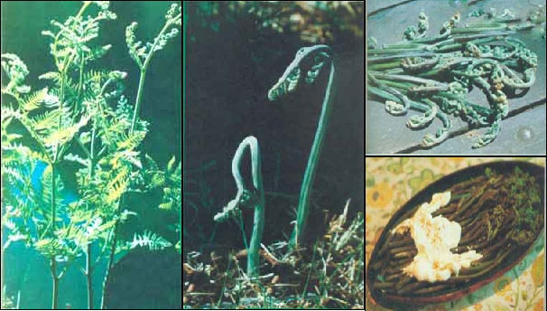

Although patches of snow may still stand on some north-facing hillsides, it's time for the first course on the spring foraging menu ...
"Them brake ferns ain't no good," the old "stump rancher" told me, "they pizens the ground so's you cain't grow nothin else!" This conversation took place in the Oregon woods during the 1930's, and the speaker lived in a crude pine shack with no garden to be seen. The odds are pretty good that he-along with his flock of sallow-faced children-was suffering from malnutrition.
Of course, there's no way that this man could have known that brake (or bracken) ferns don't poison the ground (they actually just prefer soil that's too acid for other crops), but his experience with the "weed" might have led him to reason that if he couldn't lick the blasted ferns, he ought to "join 'em". Had he made this assumption, he could even have come to realize that his runty, scrubby field of bracken was actually a garden in disguise!
In fact, with the addition of some miner's lettuce and violet leaves (both of which coexist nicely with bracken) the homesteader could have had fresh greens for his table through a good portion of the growing season!
And, since research has shown us that the sprouting tips of plants are usually high in protein, vitamins, and minerals, I'm convinced that-had the old squatter been able to read the directions that follow-his family would have been healthier and happier for their association with the common "brake".
You should know that there is a mild poison in the mature specimens of the genus Pteridium . And, were you to eat 24 pounds of adult bracken a day for 30 consecutive days, you might have some problems. Even if you were tempted to indulge in such a bovine orgy, however, you could avoid disaster by not eating the fully developed leaves that contain the toxic matter. New, leafless shoots are safe (although these should be cooked to break down the enzyme thiaminase ... which destroys vitamin B 1 and could-again, if great quantities were eaten-lead to a B 1 deficiency).
It's also important to be sure that you are picking the correct fern. (As an aid to identification, refer to the photos accompanying this article, or get a good field guide.) The plant that you're after is the common brake or bracken fern, Pteridium (or Pteris ) aquilinum , which can be identified by the fact that its fronds fan out-usually in groups of three-from a central stalk ... producing a coarse but beautiful plant that can reach a height of 50 or 60 inches!
Bracken shouldn't be difficult for anyone to locate, though. It springs up in pastures, orchards, and along forest edges throughout most of North America ... in fact, most authorities agree that the brake is the United States' most common fern.
Near my home in the Sierra Nevada, for example, bracken literally covers square miles of middle-elevation land. Yet this valuable plant is an overlooked and wasted food source throughout most of its range. (Every rule, of course, demands an exception . . . and the bracken fern is regarded as a delicacy in French Canada.)
The succulent plant should be picked when the first sprouts come up from the knotty rhizomes (roots) in the early spring. In cool (or high) locations, however, the bracken "season" can stretch into August. Just be sure the curled-over, aspara-guslike shoots haven't opened up yet, and that the roll on their tips still justifies the nickname "fiddlenecks".
It's an easy matter to gather a mess of the tasty fronds. Look for shoots less than a foot high (it's often easiest to locate last year's dried, brown growth first) and snap 'em off at the point where they break cleanly (like a fresh green bean). When tasted raw, the shoots are slightly bitter and unattractive to most folks' palates, although the Miwok Indians are said to have enjoyed their fiddlenecks uncooked.
In order to prepare your bounty, begin by washing the fronds . . . rubbing them-as you wash-to remove the silvery fuzz (sure, you'll miss some of this furry coating, but the cooking water will take care of any that you overlook). Then, cut the fronds up (or leave them whole), and plunge them into enough boiling water to cover the whole batch. (At this stage the fiddlenecks will give off a bitter-almond smell, which disappears with cooking.) Allow the pot to return to a boil, then drain the liquid off.
You'll probably want to repeat the boil-and-drain process two more times. When that's done, however, you should cover your fern feast with water for a fourth time and let it boil for half an hour or more. The shoots will be done when they're tender and don't taste the least bit bitter. (And, of course, if fewer boilings produce the same end result, so much the better.)
When the fiddlenecks are ready, drain them again (this is one cooking water that I don't save for reuse). The "mock asparagus" (we call it "Sierragus" in honor of our locale) can then be served hot with butter, or floated in cream sauce or melted cheese. And, if you prefer to eat them cold, fiddlenecks are great when marinated in oil and vinegar, or topped with your favorite salad dressing. Should you want to whip up a real "wild food gourmet" treat, however, I suggest that you try the following:
Use the above procedure to prepare 1-2/3 cups of boiled fiddlenecks. Then-in a separate bowl-mix 1 clove of finely minced garlic, 3 eggs, a thick slice of French bread (crumbled), 1/2 pound of grated Jack cheese, 2 tablespoons of grated Parmesan cheese, 1/4 teaspoon of grated nutmeg, 1/2 teaspoon of crumbled. dried basil (or two tablespoons of this herb, if it's fresh and chopped), and salt and pepper to taste. Add the fiddlenecks to this mixture and stir thoroughly.
After the ingredients are all combined, pour one tablespoon of olive oil into a medium-sized iron frying pan and heat it up. When the pan is hot enough to sizzle, pour in the frittata mixture, patting it out (if necessary) to fill the base of the container. Then, cover the pan with a flat lid (or metal plate) which has been oiled on the "under" side. Cook your fern delight over very low heat for 10 minutes, or until it becomes quite firm and is browned on the bottom.
Now for the tricky part. Once the underside of the mixture is done, quickly invert the pan so that the "pancake" will fall onto the lid. Then, slide the frittata (brown side up!) back into the pan, cover, and cook slowly for about five minutes more.
(As an alternative, this dish can be baked at 350° F for about 30 minutes and then browned under the broiler. But cooking frittatas on top of the stove in a heavy skillet is the traditional Italian method of preparing these delicacies and would-of course-lend itself to the limited "kitchen" available to most campers.)
Finally, cut the frittata into wedges and serve it (a bottle of Chianti might well be called for, too). This recipe will make a delicious dinner dish for four hungry folks.
So, when that early spring hankerin' for fresh greens hits you, ferret out some fiddlenecks .. . and, as the Italians would say, buon appetito !
EDITOR'S NOTE: More information about gathering and preparing wild foods can be found in the following volumes:
1. Stalking the Wild Asparagus by Euell Gibbons (David McKay, 1970). Paperback. $3.95.
2. Feasting Free on Wild Edibles by Bradford Angier (Stackpole Press, 1972). Paperback. $5.95.
[These volumes are available in most good bookstores or can be ordered for the listed price plus 95 cents shipping and handling from Mother's Bookshelf, P.O. Box 70,
Hendersonville, North Carolina 28739.]
|
 LEFT:The mature bracken fern can be mildly poisonous... but you can avoid this hazard by not eating the adult plants... which contain the toxic matter.CENTER:new, leafless shots are delicious and safe to eat? though they should be cooked to break down the enzyme thiaminase, which destroys vitamin B1. TOP RIGHT:Pick those plants whose curled-over shoots have not yet opened up?be sure that the roll on their tips still justifies the name ?fiddlenecks?.BELOW, BOTTOM RIGHT: To cook your foraged bounty, boil and drain the ferns several times until tender? and serve the dish hot with butter or smothered in cream sauce or melted cheese |
|
|